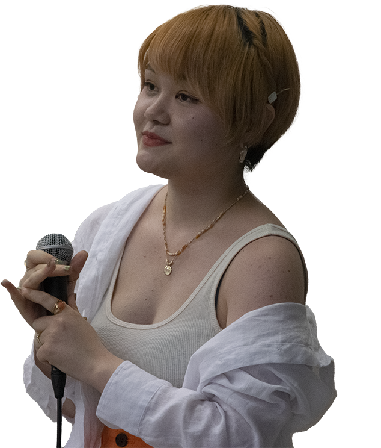
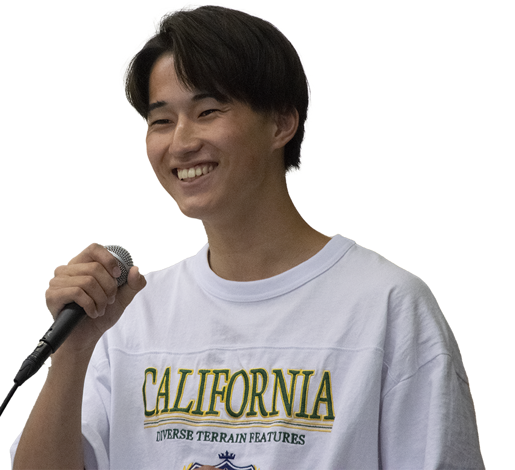

VAO合戦、第一回目を
飾ってくれたのはこの二人！
飾ってくれたのはこの二人！
majorina
『狂乱 Hey Kids!!』
THE ORAL CIGARETTES

アーティストからの一言
選曲の理由は自分の声に合っていて 盛り上がる曲だからです。 いっぱいの人に来てもらって、盛り上がって もらえて嬉しかったです。
高落 翔
『Eternal Best Friend』
高落 翔

アーティストからの一言
1年生や2年生、そして先生に自分の曲を 聴いてもらえる機会があまりなかっので、 とても新で楽しむことが出来ました。 また、昼食を食べながら人のパホーマンスを 見れるのはとても良い企画だと思いました。